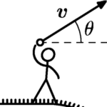

Hogg's teaching is primarily undergraduate. He is currently teaching NYU Physics I. In the recent past, he has taught NYU Dynamics, NYU Electricity & Magnetism II, NYU General Physics I, and NYU Observational Astronomy. He has also served as the Director of Undergraduate Studies for the NYU Department of Physics. Before being at NYU, he taught introductory physics courses at Princeton University and the California Institute of Technology.He has written some lecture notes on special relativity, a short instruction manual on cosmological distance measures, and the occasional pedagogical item. Some of these items are aimed at combating the trend for physics problems to be uniformly well-posed and mathematically solveable. His view is that no important problems in physics start out as well-posed problems. The challenge of a physicist is not—usually—to solve the well-posed problem; it is to make the ill-posed problem well-posed.